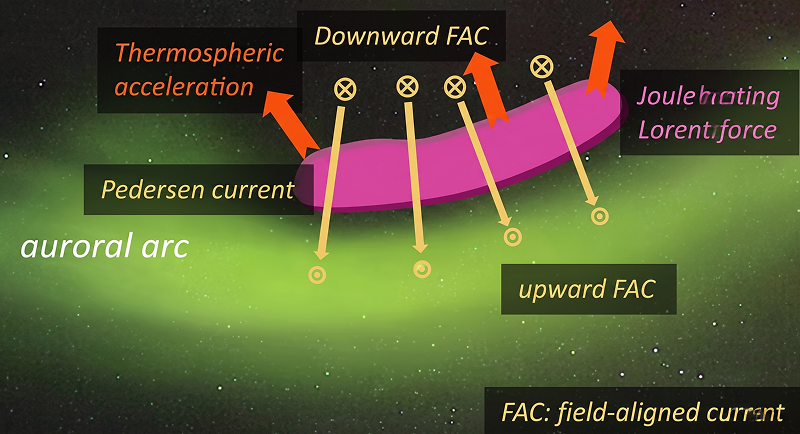
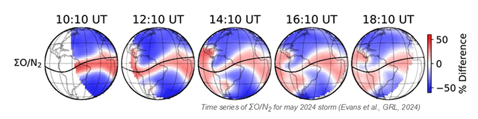
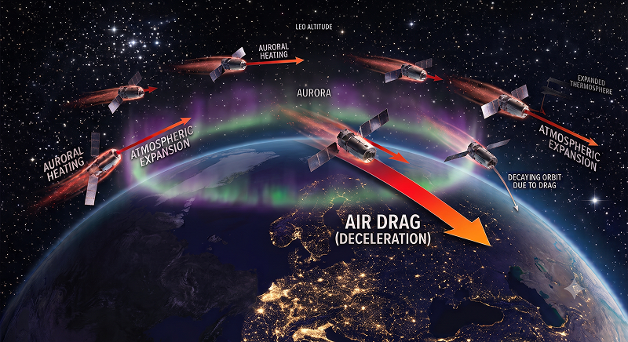
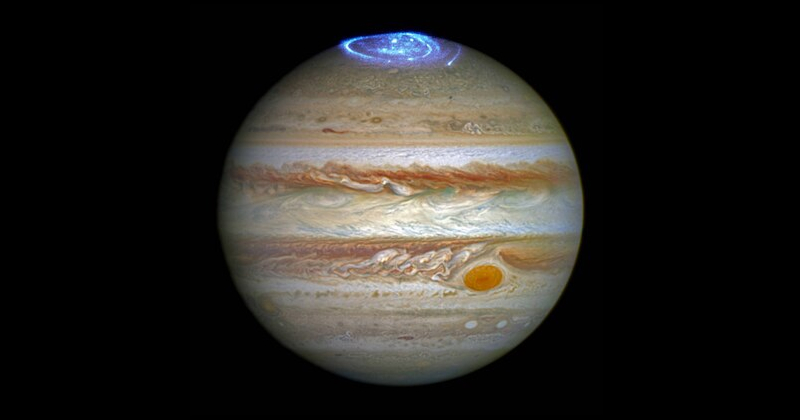
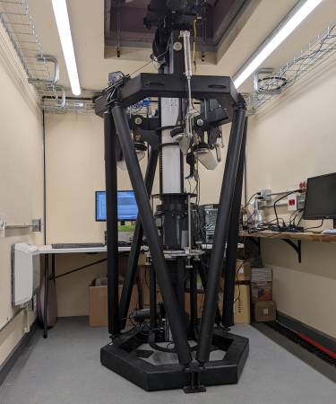
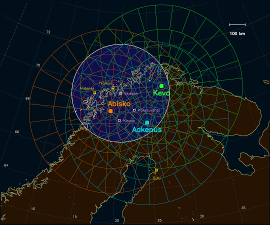
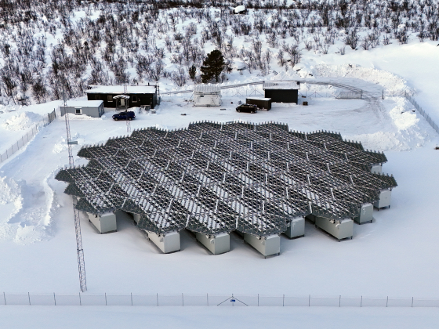
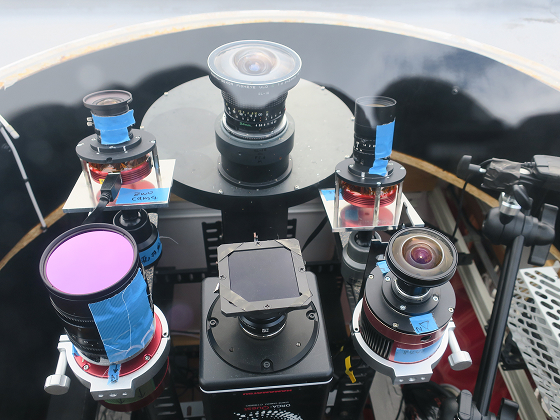

1. Research Background
The thermosphere, spanning altitudes from 100 to 300 km, is composed mainly of neutral particles, some of which are ionized to form the ionosphere. During auroral events, a concentrated flow of charged particles and electromagnetic energy enters the polar region from the magnetosphere. This influx drives intense ionospheric currents at auroral latitudes, generating substantial Joule heating that rapidly warms the thermosphere in the same region. This Joule heating and the subsequent thermal expansion of the atmosphere are widely believed to be the primary drivers behind atmospheric upwelling (vertical winds).

The thermal and dynamic responses of the polar thermosphere are directly linked to profound global effects, impacting from upper atmospheric physics to space-based infrastructure and planetary science:
Global Thermospheric and Ionospheric Disturbances
Auroral activity also accelerates thermospheric winds horizontally at high latitudes, transporting the enhanced, molecule-rich air toward the equator. This global-scale mass and energy redistribution modifies atmospheric composition and ion-chemical equilibrium, triggering severe ionospheric disturbances. Ultimately, this causes degradation in satellite navigation (GNSS) accuracy and disrupts high-frequency (HF) and aviation radio communications.

Threats to Low-Earth Orbit (LEO) Satellites
Thermospheric upwelling pushes denser air from lower to higher altitudes (400 km and above), where many satellites operate. The resulting increase in air drag can degrade satellite configuration and attitude control, occasionally leading to catastrophic failures, such as the re-entry of 38 commercial satellites in February 2022.

A Universal Key to Planetary Atmospheres
This global energy redistribution originating from high latitudes is a universal physical system in atmospheric science. It offers crucial insights for understanding other planets with strong magnetic fields and intense auroras, such as explaining the unexpectedly high thermospheric temperatures at the mid-latitudes of Jupiter and Saturn.

Photograph by NASA, ESA
2. Research Challenge
Major Scientific Question: generation mechanisms of heating and upwelling in the polar thermosphere
The exact causal relationship between thermospheric heating and upwelling is not well understood due to a significant discrepancy between numerical simulations and actual observational data. Previous studies have highlighted three critical factors that complicate this issue:
- Non-linear Physical Dynamics: Comparing heating rates (Joule heating) and dynamics (vertical winds) on a one-to-one basis is inadequate for identifying the underlying driving mechanisms.
- Spatial Mismatches: While Joule heating tends to localize around auroral structures, the regions of peak temperature rise and peak Joule heating do not always coincide due to thermospheric inertia.
- High Spatiotemporal Variability: The locations of both Joule heating and temperature elevation shift dynamically in real time as auroras move across the sky.
Traditional "point" or "line" observations integrated over time fail to capture these rapidly evolving auroral and ionospheric/thermospheric dynamics. To overcome this limitation, the SDI-3D project will execute the world’s first simultaneous, two-dimensional imaging of auroras, Joule heating rates, thermospheric temperatures, and vertical winds.
3. Research Methodology
To address this challenge, we deploy a pioneering approach that integrates an advanced ground-based observation network in Fennoscandia with a multi-instrument, multi-diagnostic framework.
I. World's First Two-Dimensional Imaging of Thermospheric Temperature and Vertical Winds
The cornerstone of this research is the wide field-of-view observation of the thermosphere using Scanning Doppler Imagers (SDIs). By coordinating three SDIs operational in Fennoscandia, we will achieve the world's first simultaneous, two-dimensional mapping of thermospheric temperatures and vertical winds. This will enable us to dynamically image precisely when, where, and how upwelling develops while pinpointing the exact onset time and location of the heating zones. These two-dimensional datasets will provide direct observational evidence of our proposed hypotheses regarding heating and vertical wind generation.


II. Multi-Instrument Coordinated Observations of the Aurora, Ionosphere, and Thermosphere
TJoule heating and the resulting thermospheric dynamics are intrinsically linked to the complex, rapidly changing morphology of auroras. To capture this physical link, our project complements the SDI observations with high-sensitivity optical cameras and the EISCAT_3D radar, all deployed within the same observation footprint in Fennoscandia. This setup simultaneously captures (a) the ultra-high spatiotemporal dynamics of auroral structures and (b) key ionospheric parameters, including electron/ion densities, temperatures, and line-of-sight velocities.

